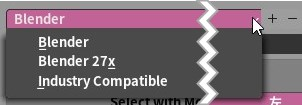

キーマップの選択
| Blender | デフォルトの |
|---|---|
| Blender 27x | バージョン2.7xに基づいた |
| 業界互換 |
Mayaなどに |
Select with Mouse Button
「選択」に使うマウスボタンを左右のどちらかに設定
この設定を変えると、
| Blender | デフォルトの |
|---|---|
| Blender 27x | バージョン2.7xに基づいた |
| 業界互換 |
Mayaなどに |
この設定を変えると、
| 再生 | 再生 |
|---|---|
| ツール | ツール |
| 検索 | 検索 |
例： ［ツール］または［検索］を選ぶと、
| Immediate |
動作をすぐに |
|---|
例： Rを押してそのままマウスを動かすと、
|
|
動作に対応した |
|---|
例： Rを押すと
| ナビゲート | ナビゲート（視点切り替え）の |
|---|---|
| ギズモ | ギズモ（変形操作のカラーガイド）の |
| 周回 | 視点の回転 |
|---|---|
| パン | 視点の平行移動 |
ここで選択しなかった方は Shift+マウス中ボタン の動作になる。
［プリファレンスを自動保存］に